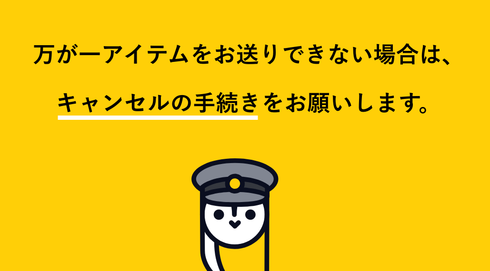
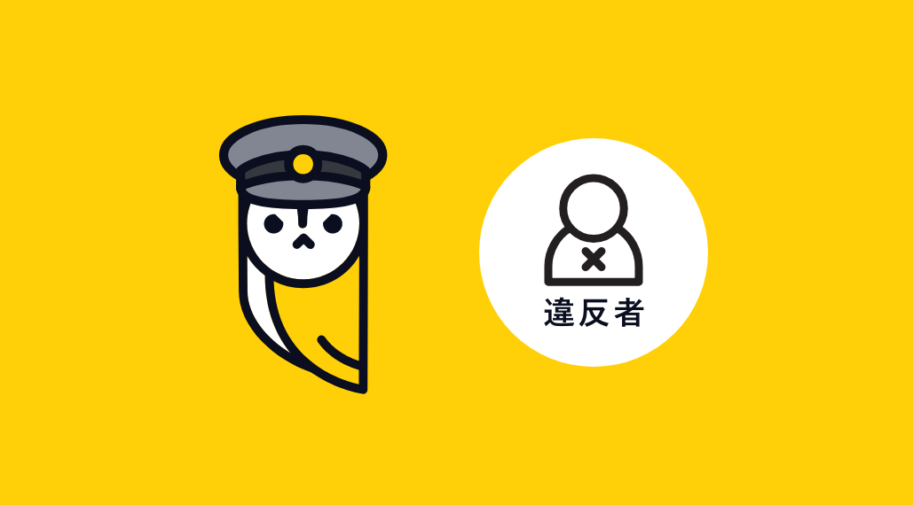

ルールとお願い
盗品・偽ブランドについて

当社は、より良い社会を実現するため、窃盗等の犯罪の防止、偽ブランド品や知的財産権を侵害する商品の撲滅に貢献することを重要な責務だと考えております。
盗品・偽ブランド品の売却は法律により禁止されており、刑事罰の対象となります。
これらに該当するものと弊社が判断した場合、警察等に通報の上、キャッシュ額をご返金頂きます。なお、アイテムを返品することはできません。あらかじめご了承ください。
当社サービスの運営を通じてより良い社会を実現するために、ご協力をお願い致します。
取引期限の超過について

キャッシュのお引き出し後は、必ずアイテムをお送り頂けますようご協力をお願い致します。
万が一お取引をキャンセルする場合、こちらの返金手続に従い、ご返金を頂けますようお願い致します。
取引期限を超過しても、アイテムの到着もしくはご返金が確認できない場合、良心的なユーザーの皆さまとの平等性を確保するため、下記の措置を採らせて頂くことがあります。
- 弊社が今後展開するサービスのご利用の制限
- 返金を求める通知等の送付
- 第三者機関による請求
- 法的手段による請求
禁止行為

当社は、CASHサービスを運営するにあたって、健全なコミュニティの形成をすることで、ユーザーの皆さまの豊かな生活に貢献し、ひいてはより良い社会の発展に貢献したいと考えております。
そのため、違法行為、利用規約に違反する行為、他のユーザーのご迷惑になる行為等、当社が問題があると判断した行為を行った場合には、アカウントの利用停止をさせて頂きます。
- 複数アカウントの利用
- 取引期限の超過
- 偽ブランド品・盗品の送付
- 虚偽の身分証の提示
- 虚偽のブランド、カテゴリのアイテム送付
- 虚偽のコンディションのアイテム送付
- 複数の同一アイテム送付
- 受付対象外のアイテム（ノベルティ・ショップ袋・付録等）送付
- 未成年の利用
- その他当社がサービスを運営する上で問題であると判断した行為
利用規約
当社は、ユーザーや関係者の皆さまと『CASH』を健全なサービスとして発展させていけるよう、利用規約を定めています。
こちらで利用規約をご確認の上、『CASH』のご利用をお楽しみください。